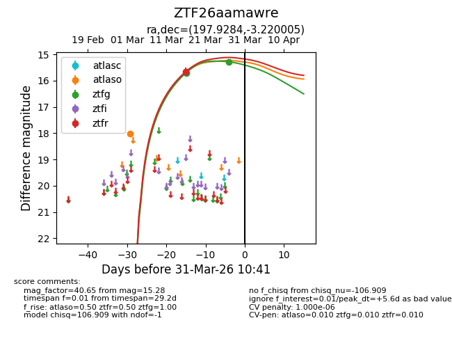
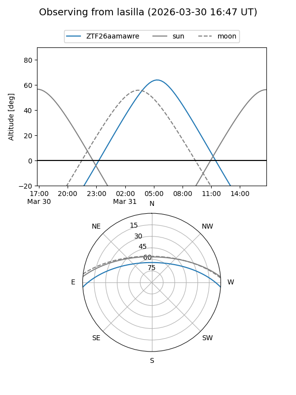
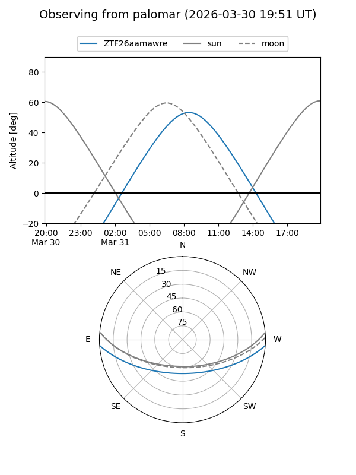
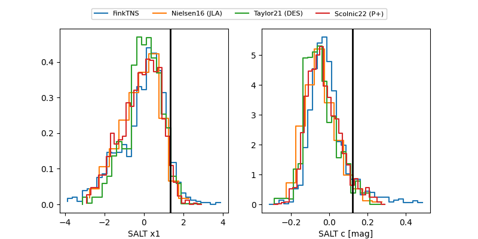

ZTF26aamawre
Target ZTF26aamawre at 2026-03-31 10:44
Aliases and brokers:
FINK: link
Lasair: link
ALeRCE: link
alt names
ZTF26aamawre (ztf,fink_ztf)
Coordinates:
equatorial (ra, dec) = 197.9284,-3.22001
equatorial (HMS+DMS) = 13:11:42.80,-03:13:12.02
galactic (l, b) = (312.8698,+59.25996)
Flags:
likely cv
Photometry:
last atlaso=18.01, ztfg=15.28, ztfr=15.66
1 atlaso, 2 ztfg, 1 ztfr detections
Lightcurve

Visibility


Additional plots
